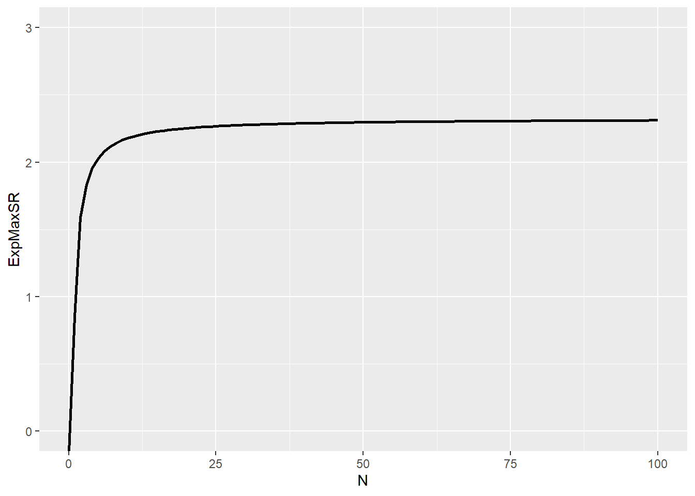
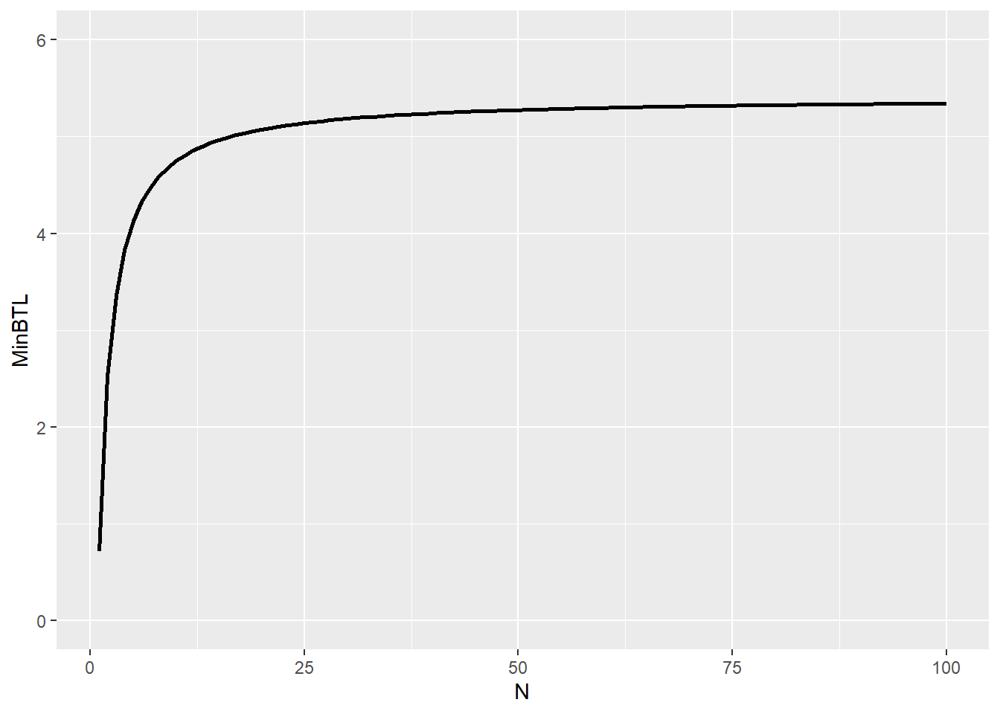

そのバックテスト本当に再現性ありますか？
1. 今回のテーマ「バックテスト」とは？
バックテストは、アルゴリズムによる投資戦略のヒストリカルシミュレーションです。バックテストは、立案した投資戦略がある期間にわたって実行されていた場合に発生したであろう利益と損失をアルゴリズムを用いて計算します。その際、シャープレシオやインフォメーションレシオなどの投資戦略のパフォーマンスを評価する一般的な統計量が使用されています。投資家は通常、これらのバックテストの統計量を調査し、最高のパフォーマンスを発揮する投資(運用)戦略に資産配分を決定するため、資産運用会社は良好なパフォーマンスを血のにじむような回数のバックテストを試行錯誤し、資料を作ってプレゼンしたりするわけです。

3倍3分法のバックテスト
投資家の立場に立つなら、バックテストされた投資戦略のパフォーマンスについては、インサンプル(IS)とアウトオブサンプル(OOS)を区別することが重要です。ISのパフォーマンスは、投資戦略の設計に使用したサンプル（機械学習の文献では「学習期間」や「訓練セット」と呼ばれる物です）でシミュレートしたものです。一方、OOSパフォーマンスは、投資戦略の設計に使用されなかったサンプル（別名「テストセット」）でシミュレーションされたものです。バックテストは、そのパフォーマンスを持ってその投資戦略の有効性を占う物ですので、ISのパフォーマンスがOOSのパフォーマンスと一致している場合に再現性が担保され、現実的であるということができます。ただ、アウトサンプルの結果はこれからの結果であるので、バックテストを受け取った時点でそのバックテストが信頼に足るものか判断することは難しいです。hold-out法などで、以下のように学習データとテストデータを分け、OOSでのテストを行っているものもありますが、OOSの結果をフィードバックして戦略の改善ができる以上、純粋なアウトサンプルとは呼べません。

ですので、ファンドマネージャーから良い結果のバックテストを受け取った場合、そのシミュレーションがどれだけ現実的であるかをなんとかして評価することが非常に重要となります。また、ファンドマネージャーも自身のバックテスト結果が持つ不確実性を理解しておくことが重要です。今回はバックテストのシミュレーションの現実性をどのようにして評価するのか、再現性のあるバックテストを行うためには何に注意すれば良いのかを調べてみたいと思います。
2. バックテストはオーバーフィットする
Bailey, Borwein, López de Prado and Zhu(2015)は、どのような金融時系列でも、バックテストのシミュレーションをオーバーフィット(過学習)させることが(比較的)簡単にできると主張しています。ここで、オーバーフィットとは、機械学習の概念であり，モデルが一般的な構造よりも特定の観察データ(ISデータ)にフォーカスしてしまう状況を表します。
Bailey et. al.(2015)では、この主張の一例として株式戦略のバックテスト結果が芳しくない状況が挙げられています。バックテストではその名の通り過去データを使用しているので、具体的に損失が発生している銘柄を特定することが可能で、その銘柄の推奨を削除するためにいくつかのパラメータを追加し、取引システムを設計することで、パフォーマンスを向上させることができるというわけです（「データ・スヌーピング」として知られているテクニック）。数回シミュレーションを繰り返えせば、特定のサンプルに存在するが、母集団の中では稀であるかもしれない特徴から利益を得る「最適なパラメータ」を導くことができます。
機械学習の文献では、オーバーフィッティングの問題を対処するための膨大な研究の蓄積があります。ですが、Bailey et. al.(2015)は、機械学習の文脈で提案されている手法は一般的に複数の投資問題には適用できないと主張します。その理由は以下4点のようです。
機械学習でオーバーフィッティングを防ぐ手法は、予測の説明力や質を評価するために、その事象が定義される領域において明示的な点推定と信頼区間を必要としますが、このような明確な予測を行う投資戦略はほとんどないため。
- 例えば、「E-mini S&P500は、金曜日の終値で1標準偏差5ポイントで1,600前後になると予測されています」とはあまり言われず、むしろ「買い」または「強い買い」といった定性的な推奨が提供されることが一般的です。しかも、この予想は予測の有効期限も明示されず、なにか予期せぬ事象が発生した際に変更がなされます。一方、定量予測では金曜日の終値と明記されています。
仮に特定の投資戦略が予測式に依存していたとしても、投資戦略の他の構成要素がオーバーフィットされている可能性がある。
- 言い換えれば、単に予測式を調整する以外にも、投資戦略をオーバーフィットさせる方法はたくさんあるということです。
回帰のオーバーフィットの方法はパラメトリックであり、金融の場合観察不可能なデータに関する多くの仮定を含むため。
いくつかの手法は試行回数をコントロールしていないため。
Bailey et. al.(2015)では、バックテストのパフォーマンスが比較的低い投資戦略を特定するためには、比較的少ない試行回数が必要であることを示しています。ここでの試行回数とは試行錯誤の回数だと思ってください。また、試行回数に応じて必要とされるバックテストの期間であるthe minimum backtest length（MinBTL）を計算しています。この論文では、パフォーマンスを評価するために常にシャープレシオが使用されていますが、他のパフォーマンス指標にも応用できるそうです。その内容を見てみましょう。
3. シャープレシオが従う分布とは
MinBTLを導出するために、まずシャープレシオの(漸近)分布を導出します。そもそも、投資戦略の設計は、通常、特定のパターンが金融変数の将来値を予測するのに役立つかもしれないという事前知識または信念から始まります。例えば、さまざまな満期の債券の間にリードラグ効果を認識している場合は、イールドカーブが上昇した場合に均衡値への回帰に賭ける戦略を設計することができます。このモデルは、cointegration equation、ベクトル誤差補正モデル、確率微分方程式のシステムなどの形をとることが考えられます。
このようなモデル構成（または試行）の数は膨大であり、ファンドマネージャーは当然、戦略のパフォーマンスを最大化するものを選択したいと考え、そのためにヒストリカルシミュレーション（バックテスト）を行います(前述)。バックテストでは、最適なサンプルサイズ、シグナルの更新頻度、リスクサイジング、ストップロス、最大保有期間などなどを他の変数との兼ね合いの中で評価します。
この論文中でパフォーマンス評価の尺度として使用されるシャープレシオは、過去のリターンのサンプルに基づいて、戦略のパフォーマンスを評価する統計量で、BMに対する平均超過リターン/標準偏差(リスク)として定義されます。通常には、「リスク1標準偏差に対するリターン」と解釈され、資産クラスにもよりますが1を上回っていると非常に良い戦略であると見なせます。以下では、ある戦略の超過リターン\(r_t\)がi.i.d.の確率変数であり、正規分布に従うと仮定します。つまり、\(r_t\)の分布は\(r_s(t\neq s)\)と独立であることを仮定しています。あまり現実的な仮定ではありませんが。。。
\[ r_t \sim \mathcal{N}(\mu,\sigma^2) \] ここで、\(\mathcal{N}\)は平均\(\mu\)、分散\(\sigma^2\)の正規分布を表しています。今、時点t~t-q+1の超過リターン\(r_{t}(q)\)を
\[ r_{t}(q) \equiv r_{t} + r_{t-1} + ... + r_{t-q+1} \] と定義すると(複利部分を無視してます)、年率化されたシャープレシオは
\[ \begin{eqnarray} SR(q) &=& \frac{E[r_{t}(q)]}{\sqrt{Var(r_{t}(q))}}\\ &=& \frac{q\mu}{\sqrt{q}\sigma}\\ &=& \frac{\mu}{\sigma}\sqrt{q} \end{eqnarray} \] と表すことができます。ここで、\(q\)は年毎のリターンの数(頻度)です。例えば、日次リターンの場合\(q=365\)となります(閏年を除く)。 \(\mu\)と\(\sigma\)は一般に未知ですので、\(SR\)の真値を知ることはできません。なので、\(R_t\)を標本リターン、リスクフリーレート\(R^f\)(定数)とすると、標本平均\(\hat{\mu}=1/T\sum_{t=1}^T R_{t}-R^f\)と標本標準偏差\(\hat{\sigma}=\sqrt{1/T\sum_{t=1}^{T}(R_{t}-\hat{\mu})}\)を用いてシャープレシオの推定値を計算することになります(\(T\)はバックテストを行うサンプルサイズ)。
\[ \hat{SR}(q) = \frac{\hat{\mu}}{\hat{\sigma}}\sqrt{q} \] 必然的な結果として、\(SR\)の計算はかなりの推定誤差が伴う可能性が高くなります。では、本節の本題、\(\hat{SR}\)の漸近分布を導出してみましょう。まず、\(\hat{\mu}\)と\(\hat{\sigma}^2\)の漸近分布はi.i.d.と\(\mu, \sigma\)が有限な値をとることから中心極限定理を適用することにより、
\[ \sqrt{T}\hat{\mu}\sim^{a}\mathcal{N}(\mu,\sigma^2), \\ \sqrt{T}\hat{\sigma}^2\sim^a\mathcal{N}(\sigma^2,2\sigma^4) \] となります。シャープレシオはこの\(\hat{\mu}\)と\(\hat{\sigma}^2\)から計算される確率変数であるので、この関数を\(g(\hat{{\boldsymbol \theta}})\)と表しましょう。ここで、\(\hat{{\boldsymbol \theta}}=(\hat{\mu},\hat{\sigma}^2)'\)です。今、i.i.d.であるので\(\hat{{\boldsymbol \theta}}\)は互いに独立となり、上記の議論から漸近同時分布は
\[ \sqrt{T}\hat{{\boldsymbol \theta}} \sim^a \mathcal{N}({\boldsymbol \theta},{\boldsymbol V_{\boldsymbol \theta}}) \] と書けます。ここで、\({\boldsymbol V_{\boldsymbol \theta}}\)は
\[ {\boldsymbol V_{\boldsymbol \theta}} = \left( \begin{array}{cccc} \sigma^2 & 0\\ 0 & 2\sigma^4\\ \end{array} \right) \] です。シャープレシオの推定値は今\(g(\hat{{\boldsymbol \theta}})\)と\(\hat{{\boldsymbol \theta}}\)だけの関数になっていますのでデルタ法より、
\[ \hat{SR} = g(\hat{{\boldsymbol \theta}}) \sim^a \mathcal{N}(g({\boldsymbol \theta}),\boldsymbol V_g) \] と漸近的に正規分布に従います。ここで、\(\boldsymbol V_g\)は
\[ \boldsymbol V_g=\frac{\partial g}{\partial{\boldsymbol \theta}}{\boldsymbol V_{\boldsymbol \theta}}\frac{\partial g}{\partial{\boldsymbol \theta}'} \] です。\(g({\boldsymbol \theta})=\mu/\sigma\)なので、
\[ \frac{\partial g}{\partial{\boldsymbol \theta}'} = \left[ \begin{array}{cccc} \frac{\partial g}{\partial \mu}\\ \frac{\partial g}{\partial \sigma^2}\\ \end{array} \right] = \left[ \begin{array}{cccc} \frac{1}{\sigma}\\ -\frac{\mu}{2\sigma^3}\\ \end{array} \right] \] よって、
\[ \begin{eqnarray} \boldsymbol V_g &=& \left( \begin{array}{cccc} \frac{\partial g}{\partial \mu}, \frac{\partial g}{\partial \sigma}\\ \end{array} \right) \left( \begin{array}{cccc} \sigma^2 & 0\\ 0 & 2\sigma^4\\ \end{array} \right) \left( \begin{array}{cccc} \frac{\partial g}{\partial \mu}\\ \frac{\partial g}{\partial \sigma}\\ \end{array} \right) \\ &=& \left( \begin{array}{cccc} \frac{\partial g}{\partial \mu}\sigma^2, \frac{\partial g}{\partial \sigma}2\sigma^4\\ \end{array} \right) \left( \begin{array}{cccc} \frac{\partial g}{\partial \mu}\\ \frac{\partial g}{\partial \sigma}\\ \end{array} \right) \\ &=& (\frac{\partial g}{\partial \mu})^2\sigma^2 + (\frac{\partial g}{\partial \sigma})^2\sigma^4 \\ &=& 1 + \frac{\mu^2}{2\sigma^2} \\ &=& 1 + \frac{1}{2}SR^2 \end{eqnarray} \] と導出することができます。シャープレシオの絶対値が大きくなるほど指数的に分散が大きくなる傾向があるので良いパフォーマンスを見た時には注意が必要かもしれません。年率化されたシャープレシオの推定値\(\hat{SR}(q)\)が従う分布はここから
\[ \hat{SR}(q)\sim^a \mathcal{N}(\sqrt{q}SR,\frac{V(q)}{T}) \\ V(q) = q{\boldsymbol V}_g = q(1 + \frac{1}{2}SR^2) \] となります。今、\(y\)をバックテストを行う年数とすると\(T=yq\)と書け、これを用いて上式を以下のように書き換えることができます(日次リターンで3年計測の場合、サンプルサイズ\(T\)は\(T=3×365=1095\))。
\[ \hat{SR}(q)\sim^a \mathcal{N}(\sqrt{q}SR,\frac{1+\frac{1}{2}SR^2}{y}) \tag{1} \] 頻度\(q\)はシャープレシオの平均には影響しますが分散には影響を及ぼしません。これでシャープレシオの推定値の漸近分布を導出することができました。さて、これを使ってなにをしたかったのかということですが、私たちは今バックテストの信頼性について考えていたのでした。つまり、FMが新商品を開発するために頭をひねって考え出した\(N\)個の投資戦略案のバックテストをした際に、それらのシャープレシオの真値がどれも0であるにも関わらず、非常に高い(良い)値が出る確率はいかほどなのかということです。Bailey et. al.(2015)では以下のように記述されていました。
How high is the expected maximum Sharpe ratio IS among a set of strategy configurations where the true Sharpe ratio is zero?
また、期待最大シャープレシオの値を小さくするためには、いったいどれほどの期間バックテストをすべきなのかも知りたいわけです。
4. the minimum backtest lengthを導出してみる
今考えている状況は、\(\mu=0\)で\(y\)を簡単化のために1年とすると(1)式より\(\hat{SR}(q)\)は標準正規分布\(\mathcal{N}(0,1)\)に従います。さて、今から私たちは\(\hat{SR}_n(n=1,2,...N)\)の最大値\(\max[\hat{SR}]_N\)の期待値について考えていくのですが、勘の良い人ならお気づきの通り、議論は極値統計の文脈に入っていくことになります。\(\hat{SR}_n\sim\mathcal{N}(0,1)\)はi.i.d.なので、その最大統計量の極値分布はFisher-Tippett-Gnedenko定理よりガンベル分布になります(証明追えてないです、ごめんなさい)。
\[ \lim_{N\rightarrow\infty}prob[\frac{\max[\hat{SR}]_N-\alpha}{\beta}\leq x] = G(x) = e^{-e^{-x}} \] ここで、\(\alpha=Z(x)^{-1}[1-1/N], \beta=Z(x)^{-1}[1-1/Ne^{-1}]-\alpha\)で、\(Z(x)\)は標準正規分布の累積分布関数を表しています。ガンベル分布のモーメント母関数\(M_x(t)\)は
\[ \begin{eqnarray} M_x(t) &=& E[e^{tx}] = \int_{-\infty}^\infty e^{tx}e^{-x}e^{-e^{-x}}dx \\ \end{eqnarray} \] と書け、\(x=-\log(y)\)と変数変換すると\(dx/dy=-1/y=-(e^{-x})^{-1}\)なので、
\[ \begin{eqnarray} M_x(t) &=& \int_{\infty}^0-e^{-t\log(y)}e^{-y}dy \\ &=& \int_{0}^\infty y^{-t}e^{-y}dy \\ &=& \Gamma(1-t) \end{eqnarray} \] となります。\(\Gamma(x)\)はガンマ関数です。ここから、標準化された最大統計量の期待値(平均)は
\[ \begin{eqnarray} \lim_{N\rightarrow\infty} E[\frac{\max[\hat{SR}]_N-\alpha}{\beta}] &=& M_x'(t)|_{t=0} \\ &=& (-1)\Gamma'(1) \\ &=& (-1)(-\gamma) = \gamma \end{eqnarray} \] となります。ここで、\(\gamma\approx0.5772156649...\)はEuler-Mascheroni定数です。よって、\(N\)が大きいとき、i.i.d.の標準正規分布の最大統計量の期待値は
\[ E[\max[\hat{SR}]] \approx \alpha + \gamma\beta = (1-\gamma)Z^{-1}[1-\frac{1}{N}]+\gamma Z^{-1}[1-\frac{1}{N}e^{-1}] \tag{2} \] と近似できます(\(N>1\))。これがBailey et. al.(2015)のProposition 1.になります。\(E[\max[\hat{SR}]]\)を戦略数(試行錯誤数)\(N\)の関数としてプロットしたのが以下になります。
library(ggplot2)
ExMaxSR = function(N){
gamma_ct = -digamma(1)
Z = qnorm(0.99)
return((1-gamma_ct)*Z*(1-1/N) + gamma_ct*Z*(1-1/N*exp(1)^{-1}))
}
N = list(0:100)
result = purrr::map(N,ExMaxSR)
ggplot2::ggplot(data.frame(ExpMaxSR = unlist(result),N = unlist(N)),aes(x=N,y=ExpMaxSR)) +
geom_line(size=1) + ylim(0,3)
小さい\(N\)に対して急激に\(\max[\hat{SR}]\)の期待値が上昇していることがわかると思います。\(N=10\)の時、\(\max[\hat{SR}]=1.54\)となっており、全ての戦略のシャープレシオの真値が0にも拘わらず、少なくとも1つは見かけ上かなり良いパフォーマンスの戦略が見つかることが期待されます。金融ではhold-out法でのバックテストはしばしば使用されるかと思いますが、この方法は試行(錯誤)回数を考慮に入れていないため、\(N\)が大きいときには信頼に足る結果を返してくれないわけです。バックテストの結果を向上させるため、闇雲にあれやこれやとシミュレーションを行うことは非常に危険だと思いませんか？最終的にプレゼン資料に上がってくるのは\(N\)個の戦略のうち、最もパフォーマンスが良いもののみですから、今回の例のように10個戦略を考えただけでもどれかはシャープレシオが1.87付近に分布しているわけです。試行錯誤数なんてもちろん資料には記載しませんから、非常にミスリーディングなわけです。こういった資料を評価する際にはまず偽陽性を疑ってかかった方がいいかもしれません。
では、どうすれば良いのかという話ですが、Bailey et. al.(2015)では、Minimum Backtest Lengthを計算しています。要は試行(錯誤)数\(N\)を増やすにつれて、バックテストの年数\(y\)も伸ばしていけよと戒めているわけです。\(N\)とMinimum Backtest Lengthの関係性を示していきましょう。先ほどと同じく\(\mu=0\)を仮定しますが、\(y\neq 1\)であるケースを考えます。年率化シャープレシオの最大統計量の期待値は(2)式より、
\[ E[\max[\hat{SR}(q)]_N] \approx y^{-1/2}((1-\gamma)Z^{-1}[1-\frac{1}{N}]+\gamma Z^{-1}[1-\frac{1}{N}e^{-1}]) \] となります。これを\(y\)に対して解いてやることでMinBTLが求まります。
\[ MinBTL \approx (\frac{(1-\gamma)Z^{-1}[1-\frac{1}{N}]+\gamma Z^{-1}[1-\frac{1}{N}e^{-1}]}{\bar{E[\max[\hat{SR}(q)]_N]}})^2 \] ここで、\(\bar{E[\max[\hat{SR}(q)]_N]}\)は\(E[\max[\hat{SR}(q)]_N]\)の上限値で、シャープレシオの真値が0である\(N\)戦略でシャープレシオの最大統計量が取りうる値を抑えます。その際に、必要なバックテスト年数\(y\)がMinBTLとして導出されるのです。\(\bar{E[\max[\hat{SR}(q)]_N]}=1\)として、MinBTLを\(N\)の関数としてプロットしたものが以下です。
MinBTL <- function(N,MaxSR){
return((ExMaxSR(N)/MaxSR)^2)
}
N = list(1:100)
result = purrr::map2(N,1,MinBTL)
ggplot2::ggplot(data.frame(MinBTL = unlist(result),N = unlist(N)),aes(x=N,y=MinBTL)) +
geom_line(size=1) + ylim(0,6)
simSR <- function(T1){
r = rnorm(T1)
return(mean(r)/sd(r))
}仮にバックテスト年数が3年以内しかできない場合は試行(錯誤)回数\(N\)はほぼ1回に抑えないといけないことになります。3年以内の場合は一発で当ててねという厳しめの制約です。注意しないといけないのは、MinBTLの範囲内でバックテストを行っていたとしてもオーバーフィットすることは考えられるということです。つまり、MinBTLは必要条件であって十分条件でないというわけです。
4. 終わりに
López de Prado(2018)では、オーバーフィッティングを防ぐ汎用的な手段として以下が挙げられています。
Develop models for entire asset classes or investment universes, rather than for specific securities. Investors diversify, hence they do not make mistake X only on security Y. If you find mistake X only on security Y, no matter how apparently profitable, it is likely a false discovery. (拙訳：特定の有価証券ではなく、アセットクラス全体またはユニバース全体のモデルを開発すること。投資家はリスクを分散させているので、彼らはある証券Yだけに対してミスXをすることはありません。あなたが証券YだけにミスXを見つけた場合は、それがどんなに明らかに有益であっても、誤発見である可能性が高い。)
Apply bagging as a means to both prevent overfitting and reduce the variance of the forecasting error. If bagging deteriorates the performance of a strategy, it was likely overfit to a small number of observations or outliers. (拙訳：オーバーフィットを防ぎ、予測誤差の分散を減らすための手段として、バギングを適用すること。バギングが戦略のパフォーマンスを悪化させる場合、それは少数の観測値または外れ値にオーバーフィットした可能性が高い。)
Do not backtest until all your research is complete. (拙訳：すべてのリサーチが完了するまでバックテストをしないこと。)
Record every backtest conducted on a dataset so that the probability of backtest overfitting may be estimated on the final selected result (see Bailey, Borwein, López de Prado and Zhu(2017)), and the Sharpe ratio may be properly deflated by the number of trials carried out (Bailey and López de Prado(2014.b)). (拙訳：研究者が最終的に選択したバックテスト結果がオーバーフィットしている確率を推定できるように、単一の(同じ)データセットで実施されたバックテストをすべて記録すること（Bailey, Borwein, López de Prado and Zhu [2017]）、また、実施された試行数によってシャープレシオを適切にデフレーションできるようにすること（Bailey and López de Prado [2014]）。)
Simulate scenarios rather than history. A standard backtest is a historical simulation, which can be easily overfit. History is just the random path that was realized, and it could have been entirely different. Your strategy should be profitable under a wide range of scenarios, not just the anecdotal historical path. It is harder to overfit the outcome of thousands of “what if” scenarios. (拙訳：ヒストリカルではなくシナリオをシミュレーションすること。標準的なバックテストはヒストリカルシミュレーションであり、オーバーフィットしやすい。歴史(これまでの実績)はランダムなパスの実現値に過ぎず、全く違ったものになっていた可能性があります。あなたの戦略は、逸話的なヒストリカルパスではなく、様々なシナリオの下で利益を得ることができるものであるべきです。何千もの「もしも」のシナリオ結果をオーバーフィットさせるのは(ヒストリカルシミュレーションで過学習するよりも)より難しいことです。)
Do not research under the influence of a backtest. If the backtest fails to identify a profitable strategy, start from scratch. Resist the temptation of reusing those results. (拙訳：バックテストのフィードバックを受けてリサーチしないこと。バックテストが有益な戦略を見つけ出すことに失敗した場合は、ゼロからリサーチを再始動してください。それらの結果を再利用する誘惑に抗ってください。)
3と6は本日の論文と関係のある文脈だと思います。この分野は他にも研究の蓄積があるので、業務でバックテストを行うという人は運用手法の勉強もいいですが、そもそものお作法としてバックテストの正しい運用方法について学ぶことをお勧めします。
さて、いつもとは違う観点で、少しメタ的なトピックに取り組んでみました。自分自身仕事柄バックテスト結果などを見ることも多いですし、このブログでもしばしばhold-out法でのバックテストをしています。得られた結果の不確実性を理解して、評価できるよう今後もこのトピックの研究を追っていきたいと思います。